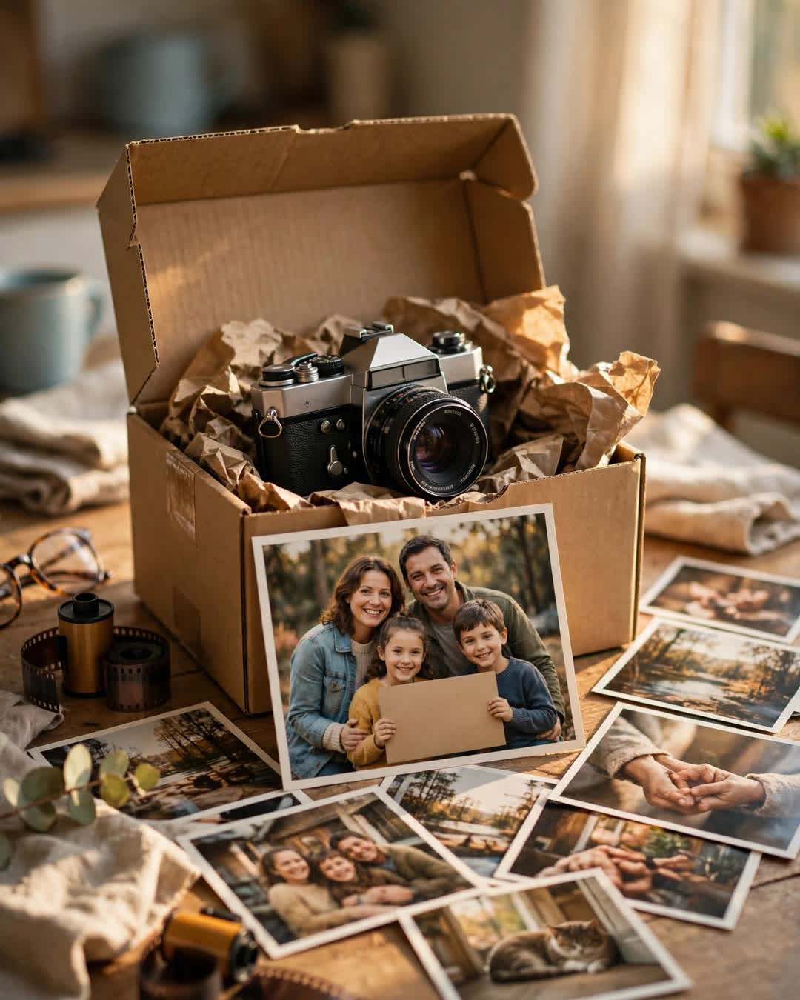

The Extra Photograph
A Clipp Kaili original story

The camera came back in the mail six weeks after I lost it, with the film already developed — and one photograph I never took.
I had left it on a stone wall at a scenic overlook in the Blue Ridge Mountains in the fall of 2011, like an idiot, like a man already composing the story of losing it. It was my grandfather's film camera, a heavy old Canon he'd carried through two decades of family birthdays. The roll inside held the last photos of our family reunion — my grandmother at the head of a picnic table, still strong then, laughing with a paper plate in her hand. Grandpa had died that spring. Grandma would be gone by Christmas. When I drove back to the overlook that evening and found the wall bare, I stood there feeling like I had lost all three of them in one afternoon.
I reported it to the park office. I posted in forums. I did the hopeless little rituals of the bereaved-by-carelessness. Nothing. Months taught me to stop flinching at the mailbox.
Then the box arrived — no return address, postmarked Asheville, packed with the care of a person who wraps things like they matter. The camera, cleaned. The lens cap I'd never owned — someone had bought a replacement for the one I must have lost long before. And a white envelope of prints.
I went through them at the kitchen table with my hands shaking. There they all were. The reunion. My cousins mid-laugh. The picnic. And Grandma — alive in glossy color, sun on her face, exactly as I needed to remember her and was so afraid I'd failed to keep.
There were twenty-four frames on that roll. I had taken twenty-three.
The twenty-fourth photograph showed a family I had never seen.
A man, a woman, and two little girls in matching rain boots, standing at that same scenic overlook, holding a hand-lettered cardboard sign up to the camera. All four of them were waving. The sign had been written in marker, in a child's careful capitals, and it took up most of the frame:
"THANK YOU FOR LENDING US YOUR CAMERA. IT IS HOME NOW."
Tucked into the envelope was a note on lined notebook paper.
It said: "Dear Camera's Family — Our girls found your camera on the wall and we knew from the pictures that it belonged to people who love each other. We kept it safe all winter at our house while we tried to find you through the park office. The girls insisted it was 'visiting.' Before we mailed it, they asked if the camera missed you, and if we could put one picture of us inside it, so you would know it was loved while it was away and not scared. We hope your grandmother liked the mountains. She looks like the kind of lady who did. — The Okafor Family, Table Rock Road. P.S. The littlest one named the camera Gerald. Sorry. It stuck."
I laughed out loud, alone in my kitchen, and then I cried — over a camera, over a cardboard sign, over two little girls in rain boots who understood something about loss that most adults never learn: that a lost thing is not just a thing. Somewhere, it has a family. Somewhere, it is missed by name.
I wrote back to Table Rock Road. The Okafor girls are grown now — one is a photographer, which everyone in both families agrees is entirely Gerald's fault. Their parents still exchange Christmas cards with mine. And the twenty-fourth photograph hangs framed in my hallway, right beside Grandma's picnic picture, two families on one wall.
Strangers, who found what grief had dropped, and loved it carefully, all the way home.
This story is a work of fiction, written to touch hearts and bring families closer.
← Back to all stories